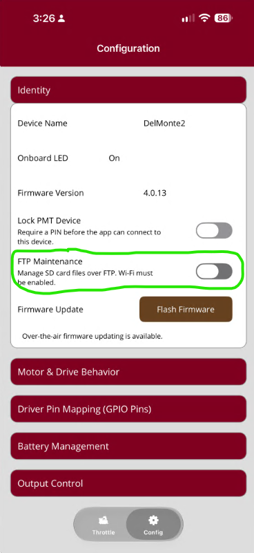

Manage the PMT SD card over FTP.
FTP Maintenance temporarily exposes the SD card managed by the PMT firmware as a standard FTP server, allowing files to be maintained from a computer without removing the card.
FTP is deliberately temporary. Enable it only when needed, then turn it off so the PMT device can reboot into normal operation.
Enable FTP Maintenance

Configuration → Identity → FTP Maintenance
- Connect the PMT app to the PMT device over BLE.
- Open Config.
- Expand Identity.
- Turn on FTP Maintenance.
- Read the warning and confirm.
- Wait for the app to show the FTP endpoint.
The endpoint will look similar to:
ftp://192.168.71.200/Manual BLE command control
The app switch is the normal user interface, but the firmware also provides direct BLE commands for diagnostics, automation, and Terminal use. These are BLE commands; they are not FTP commands entered into File Explorer or an FTP client.
Check FTP state
FTP?Typical responses include:
FTP:OFF
FTP:ENTERING
FTP:ON IP=192.168.71.200 PORT=21 ACCESS=ANONYMOUS
FTP:ON WIFI=DISCONNECTED
FTP:REBOOTEnter FTP Maintenance
FTP1Common preflight errors include:
ERR:FTP:NO_WIFI
ERR:FTP:NO_IP
ERR:FTP:NO_SD
ERR:FTP:BUSY
If startup fails after maintenance has already been latched, the response includes REBOOT_REQUIRED,
such as ERR:FTP:MEMORY REBOOT_REQUIRED or ERR:FTP:START REBOOT_REQUIRED.
Exit FTP Maintenance
FTP0When FTP is active, PMT replies ACK:FTP0 REBOOT and then reboots.
Maintenance command lockout
SS? remains available as a read-only maintenance indicator and returns A:SS=FTP.
Other normal PMT commands are blocked with ERR:CMD:FTP_MAINT_ACTIVE.
FTP maintenance commands are BLE-only. Other transports receive ERR:FTP:BLE_REQUIRED.
What FTP Maintenance changes
FTP Maintenance is a dedicated safe-maintenance state. The firmware shuts down normal services so FTP can have exclusive access to the PMT-managed SD filesystem.
Normal throttle, FX, function, audio, script, configuration, and other operating commands are blocked while FTP is active. On a throttle, the locomotive is stopped before FTP becomes active and cannot be commanded again until reboot.
Because normal commands are intentionally blocked, the PMT app may show command or communication errors during the maintenance session.
Connect from Windows 11
- Open File Explorer.
- Enter the FTP endpoint shown by the PMT app into the address bar.
- Press Enter.
- Browse and maintain files on the PMT SD card.
ftp://<device-ip>/PMT uses standard anonymous FTP, so no PMT username or password is required.
Connect from macOS
Use a standard FTP client on macOS for full read/write file management.
- Protocol: FTP
- Host: the IP address shown by the PMT app
- Port: 21
- Login: Anonymous
Files you can maintain
PMTPlayer audio
PMTPlayer WAV files can be copied or replaced through FTP. Typical active folders are:
/diesel
/steamTurn FTP Maintenance off and allow the PMT device to reboot before testing changed audio.
Scripts
Firmware script files can be maintained under:
/scriptsScript playback and recording are stopped while FTP Maintenance is active.
Logs
Log files can be downloaded from folders such as:
/logsSD logging is stopped before FTP gets exclusive access to the card.
Finish the FTP session
- Close or disconnect the FTP client on the computer.
- Return to Config → Identity.
- Turn FTP Maintenance off.
- Allow the PMT device to reboot.
The reboot is intentional and is the only supported way to restore normal PMT operation after FTP Maintenance. FTP is not persisted and will be off after reboot.
Troubleshooting
/scripts/, /logs/, /diesel/, and /steam/ when those folders exist on the card.